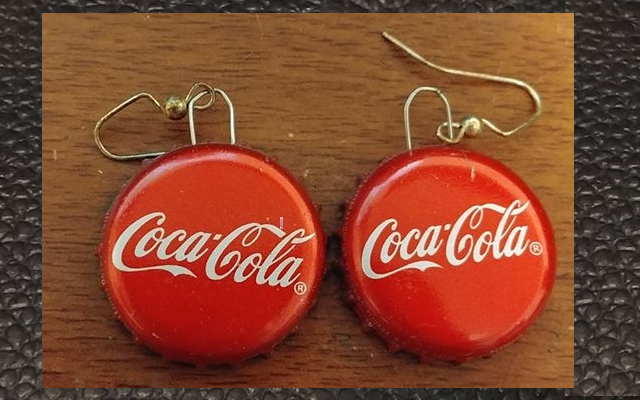
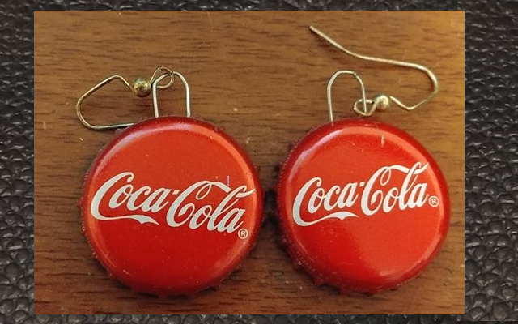

What are my Hobbies?
In my spare time I enjoy a hand full of things. I am always busy with something. I like to create things both on computers and in real life. I have tried my hand at wood working although I am not very good so far. I also enjoy drawing and painting in hands on mediums. I have been known to make my own jewelry on occasion and I occasionally sew. When I am on my computer, I am either practicing my software development skills, playing video games, combining images in GIMP, or trying and failing to create something on blender.
Below are some of the paintings that I have done although I don't have a serious portfolio because I have no interest in painting for income.
Below are some earrings I have made recently. I like music and am a fan of the old 1950s pin up girls so I was able to combine them into earrings!
 

A few pictures of my art
Because I am new at software development I will don't have much to show you in this field but I anticipate adding more to this section later.